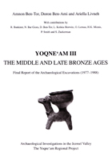

A. Ben-Tor, Doron Ben-Ami, and A. Livneh
Yoqne'am III: The Middle and Late Bronze Ages. Final Report of the Archaeological Excavations (1977-1988)
Institute of Archaeology, Hebrew University of Jerusalem, and Israel Exploration Society: Jerusalem, 2005
 |
Remains of the Bronze Age were uncovered at Yoqne'am in Areas A1 and A4 (Photos L1-3). Area A1 is located on the northern slope of Tel Yoqne'am (Plan 1.1, Squares L-N/19-21, O/19, P/19-20). This area is a section excavated from the city wall of the Iron Age northward down the mound's slope. The earliest remains uncovered here, built directly on bedrock, are from the MB IIA. The entire stratigraphic sequence from the early MB IIA (Stratum XXV) to the end of the Late Bronze Age and into the Iron Age is represented in Area A1. Area A4 is a trench in the western slope of the mound (Plan 1.1, Squares C-G/24-27), cutting through strata dating from the Iron Age II, the Late Bronze Age and the MB II, and finally reaching fills of the EB III found on bedrock. Except for a massive fortification system assigned to Stratum XXIII, the remains of the Middle Bronze Age in Area A4 are very poor. The remains of the Late Bronze Age, however, are better preserved in Area A4 than in Area A 1. In the present state of our knowledge the extent of the Early Bronze Age settlement in Yoqne'am, if indeed there was one, cannot be determined. Fills containing Early Bronze Age pottery were found on the site's bedrock. The earliest architectural remains uncovered so far are those dated to the MB II. The M B II remains in Yoqne'am were found mainly in Area A1 and include a stratigraphic sequence comprising five strata, spanning the period from the MB IIA to the MB IIC. Each of these strata represents a new phase in the site's settlement history. The division of the Middle Bronze Age into periods is based on the stratigraphic analysis and the study of the pottery found on the floors of the different strata. The three earliest strata, XXV, XXIVb and XXIVa, are assigned to the MB ITA, each representing a different phase within this period. Based on the analysis of the ceramic assemblages, Stratum XXIIIb appears to be a transitional phase between the MB IIA and the MB IIB, whereas Stratum XXIIIa is already characterized as part of the MB IIB. The following Stratum XXII still belongs to the culture of the MB IIB. Stratum XXI represents the MB IIC at Yoqne'am, though it also demonstrates some features of the transition to the LB I (for detailed discussion, see Chapter 3). Thus, the temporal divisions based on the ceramic analysis do not always conform with the stratigraphic ones. The transition between the MB IIA and the MB 1113 occurs within Stratum XXIII: Stratum XXIIIb still shows characteristics of the MB IIA, whereas Stratum XXIIIa already belongs to the MB 1113. Stratigraphically, Stratum XXIIIb and Stratum XXIIIa vary only in minor details. A similar case has been observed at nearby Tel Qashish, where the transition between the MB IIA and the MB IIB occurs within Stratum IX: Stratum IXc is a transitional MB IIA/B phase, whereas Strata IXb-a are already dated to the MB IIB (Ben-Tor et al. 2003: 202, 212, 230). During most of the Middle Bronze Age, from Stratum XXIV of the MB IIA to the end of the MB 1113, Yoqne'am was a fortified city. Three fortification systems were built in Area A1. Yoqne'am was first fortified during Stratum XXIV by a massive city wall, consisting of a mud-brick superstructure on a stone base (W.415, Plans IL3-4) with a glacis attached to its outer face. A new fortification system of a similar character was built in Stratum XXIII (W.402, Plans 11.5-6), and its western extension was uncovered in Area A4 (W.387, Plan IL9). The third fortification system, built in Stratum XXII, includes a stone-built city wall with a tower abutting its inner face (W.401, Plan IL7). A new era in the history of the site, during which the city was unfortified, started with Stratum XXI and lasted until Stratum XVI of the Iron Age II. The remains of Stratum XXI are supported by a retaining wall built at the top of the slope (W.336b, Plan II.8). A thick layer of fill sealed the remains associated with the final MB II phase (Stratum XXI), on top of which was built a new settlement (Stratum XXb), characterized by a new urban plan. Though the architectural remains associated with Stratum XXb are better preserved in Area A4, we are unable to reach any comprehensive conclusions about the character of the transition between Stratum XXI and the new settlement erected immediately on top of it (Stratum XXb), due mainly to the badly preserved remains of the former. This transition is most evident in Area A1 (see the stratigraphic discussion of the Stratum XXb remains in both areas, Chapter 4). The interruption in the stratigraphic sequence between Strata XXI and XXb is not paralleled by the ceramic assemblages, which display continuity between these two strata. Moreover, in neither area did the excavation reveal any sign of a violent destruction that might explain the stratigraphic break and overall change in the nature of the architectural elements attributed to each stratum. Together with the ceramic evidence mentioned above, this phenomenon is of great significance for the character of the transition between the Middle Bronze Age and the Late Bronze Age. A massive destruction terminated the LB I settlement at Yoqne'am (Stratum XXa), which was followed by an occupational gap. Stratum XIX marks the recovery of urban life at the site during the second half of the Late Bronze Age. This recovery is characterized by the reoccupation of the abandoned LB I site and the establishment of a new settlement on top of it. This stratum, like the one preceding it, ended with a violent destruction. The ceramic assemblages uncovered on the floors of Strata XX-XIX are an important tool for the relative chronology and cultural attribution of these strata. These assemblages demonstrate that the earlier phase of Stratum XX (XXb) dates from the transitional MB IIC-LB I period, while the later phase of this same stratum (XXa) already belongs to the LB 1 culture. Stratum XIX with its two phases (XIXb and XIXa) should be dated, according to the ceramic evidence, to the LB II. Both strata ended in a violent destruction. The thick layer of debris separating these two strata represents an occupational gap at Yoqne'am following the destruction of Stratum XXa. The destruction of Stratum XXa was an extreme event in the occupational sequence of Yoqne'am; after it the site was deserted until it was resettled during the LB II (Stratum XIXb). During the thirteenth century BCE the site underwent another violent destruction, which brought to an end the last Canaanite city at the site. The buildings of the early Iron Age I settlement (Stratum XVIII) were erected on top of the ruins of Stratum XIXa, signifying the beginning of a new cultural phase in the occupational history of Yoqne`am. The transition between the MB II and the LB I is one of the most intriguing within the sequence of cultures in Canaan , and one of the most problematic to define and date. It has consequently been the focus of a number of studies attempting to establish its cultural and chronological framework (see, among many others, Weinstein 1981, 1991; Dever 1992 and references there). Though the material uncovered by the numerous excavations of stratified sites in Palestine during the past 60-70 years has added valuable information, this issue is still a controversial one, as attested by the disagreement even on its basic terminology. This time span is characterized by the difficulty of correlating the changes observed in the material culture with the historical events that took place in Canaan at the close of the seventeenth and in the first half of the sixteenth centuries BCE. The destruction and abandonment of late Middle Bronze Age sites in the mid-sixteenth century BCE has conventionally been assigned by scholars to the military campaigns of the Egyptians kings of the early 18th Dynasty as part of their efforts to drive the Hyksos out of Egypt and destroy their power in Canaan. In recent years, however, this view has been challenged by scholars such as Redford (1979), Shea (1979) and Hoffmeier (1989), who have au-gested several alternative explanations for the destructions and abandonments of the MB IIC-LB I. Furthermore, several different chronological schemes have been suggested for the end of the Middle Bronze Age. On the other hand, the archaeological realia have to be confronted with the historical picture, and here the ceramic assemblages are significant. According to the archaeological evidence, the appearance of new ceramic families which are considered hallmarks of the LB I, namely the Chocolate-onWhite and Bichrome Wares (as well as other ceramic types and families; see Chapter 7), is used as a cultural criterion marking the end of the MB IIC and heralding the beginning of the LB I culture in Palestine. Since the early appearance of these ceramic families in Palestine is closely related and considered to be synchronic (around 1600 BCE), it is clear that the cultural change preceded the historical change that took place several decades later. It is hoped that the evidence of the stratigraphy, combined with the ceramic analysis and the typological comparison with other sites, will form a solid foundation for the following discussion, in which we shall attempt to reconstruct the occupational history of Yoqne'am during the Middle and Late Bronze Ages. Parts II and III deal with the stratigraphic and ceramic analysis in chronological order, i.e. the Middle Bronze Age Strata XXV-XXI are followed by the Late Bronze Age Strata XXb-XIXa. Each part begins with the description of the architectural remains by stratum, followed by analysis of the pottery of each stratum. Photographs, plans and sections, and drawings and photographs of the pottery, accompany each stratum. Since only a few segments of floors could be assigned to the Middle Bronze Age sequence, almost the entire ceramic assemblage associated with each of these is presented, together with a few indicative sealed fills (glacis fills, pits). On the other hand, since each of the Late Bronze Age strata includes several floors, in most cases only the ceramic assemblages from representative loci of each stratum accompany the discussion. The pottery figures are accompanied by tables that cite parallels to the vessels, which are generally not noted in the ceramic discussion. The reference for each parallel consists of abbreviated site name, volume number or date of publication (in cases of more than one publication), figure/plate number and stratigraphic provenance (stratum or tomb): for example, Qashish, Fig. 89:2 (IXc). Parallels for the different vessels were primarily sought in Jezreel Valley sites ( Megiddo , Tel Qashish, Tel Qiri) in the vicinity of Yoqne'am. Megiddo and Yoqne'am are the most important Bronze Age sites in the Jezreel Valley , each located next to a major road junction (Wadi `Ara and Wadi Milek respectively). The comparison of Yoqne'am with these neighboring sites in terms of material culture emphasizes the relationship between the sites in the different periods. Second in importance are more remote sites, located in the coastal plain (Tel Mevorakh, Tel Burga, Tel Zeror, Tel Poleg, Kabri, Tel Nami), the eastern end of the Jezreel Vallev (Tel Beth-Shean, Pella ), the hill country ( Shiloh , Shechem) and the Jordan Valley (Tell el-Hayyat, Jericho ), together with other kev sites of the period (Tel Aphek, Hazor, Lachish ). In some cases. parallels are cited from tombs containing rich assemblages (Barkai, Kefar Szold, Ginosar, Tel `Amr). In Part N the ceramic repertoire of both the Middle and the Late Bronze Ages is discussed. The typological analysis deals with the vessel's profile, its relative quantity and its chronological range. This approach enables evaluation of the continuity or discontinuity of the different ceramic types throughout the periods, and may also help in determining the transitional phases within this long continuum. The discussion is accompanied by quantitative tables and at times by graphs illustrating the main tendencies. Part V presents the stratigraphic, ceramic and glypti, remains of the Early Bronze Age, a scarab impression, stone objects, flint tools, loomweights, metal objects, worked bone, and human and faunal remains. |
| Back to Publications | Table of Contents |